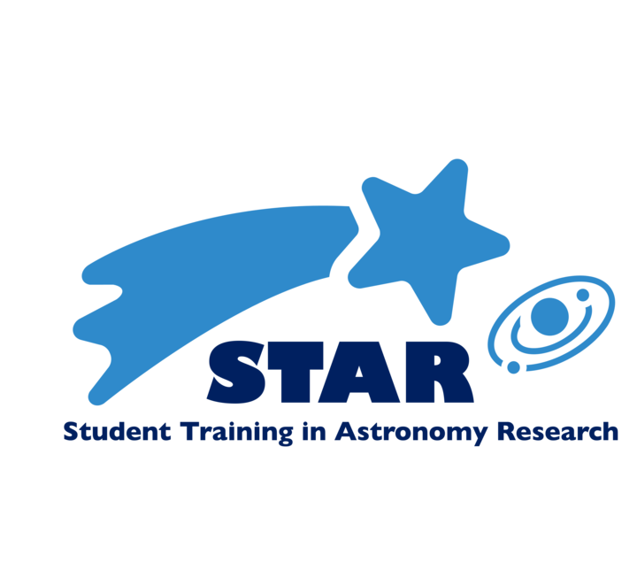

The Columbia Student Training in Astronomy Research (STAR) program at Columbia University provides high school students in Manhattan an opportunity to work alongside PhD students in year-long independent research projects in astronomy. Students will learn what it's like to conduct reserach in astronomy by collaborating with other students under the guidance of their mentors. Students will also develop their background knowledge of astronomy during the Star School training.
Daniel Yahalomi
Director/Mentor
Matthew Scoggins
Co-Director/Mentor
Alexandra Masegian
Co-Director/Mentor
Marguerite Epstein-Martin
Co-Director/Mentor
Soichiro Hattori
Mentor
Ben Cassese
Mentor
Justin Vega
Mentor
Applications for the 2024-2025 program are currently closed. A link to the next round of applications will be listed here, with applications opening on DATE of 2025.
If you are a graduate student or postdoc who is interested in mentoring for the STARs program, please contact (insert Daniel's info?)
Temp.